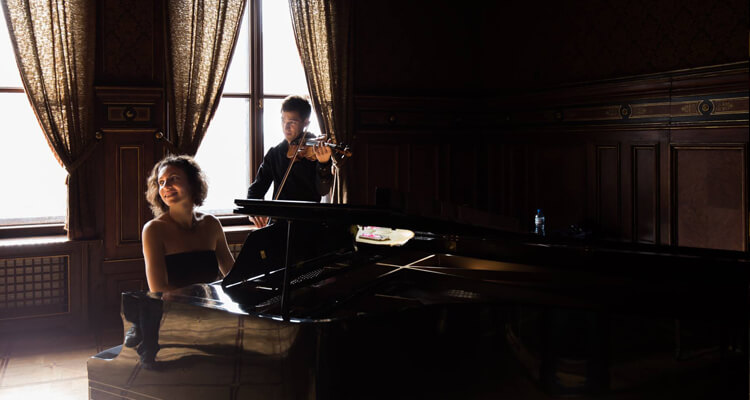

'Sie ist eine der Pianistinnen, die den Flügel zum Fliegen bringen!' Graham Johnson
Kasia Wieczorek hat sich in den letzten Jahren einen Ruf als hervorragende Pianistin und Klavierpartnerin aufgebaut. In Jelenia Gora, Polen, in eine Musikerfamilie hineingeboren, kontinuierte sie ihre Liebe zur Musik erst bei Prof. Irina Oleszkiewicz (Minsk) und dann an der Hochschule für Musik, Theater und Medien in Hannover bei Prof. Martin Dörrie und Matti Raekallio (Juilliard School). Sie ist Preisträgerin nationaler und internationaler Klavierwettbewerbe (Internationaler Klavierwettbewerb Marco Polo, Chopin Wettbewerb für die Jugend) sowie des Karl-Bergemann-Blattspielwettbewerbs.

'Ich schätzte ihren unterstützenden Enthusiasmus für jeden Kandidaten und ihre inspirierende Fähigkeit, Musik auch nach unzähligen Aufführungen desselben Werkes lebendig zu halten. Die Zusammenarbeit war eine Freude, die sie jedes Mal, wenn sie auf der Bühne erschien, ausstrahlte, und ihre Präsenz half, die Musik Routinen überwinden zu lassen.'
Richard Stoltzmann

Durch Ihre außergewöhnliche Vielseitigkeit hat sie mit vielen herausragenden Musikern zusammengearbeitet, beispielsweise mit Ana Chumachenko, Steven Isserlis, Julian Rachlin, Sol Gabetta, Frans Helmerson, Guy Braunstein, Nobuko Imai, Grace Bumbry und Rheinhold Friedrich. Es folgten Aufnahmen für das WDR Radio Köln, den HR (Hessischen Rundfunk), das NDR Fernsehen und für das BBC Radio in der "New Generation Artists"-Serie.
Als Pianistin hat sie mehrere große Wettbewerbe offiziell begleitet, etwa den Prager Frühling Wettbewerb, den ARD Wettbewerb München, den Aeolus Wettbewerb und den Wieniawski Wettbewerb in Posen. Sie ist Mitglied der Konzertorganisation "Rhapsody in School", die von Lars Vogt ins Leben gerufen wurde. Neben regelmäßigen Meisterklassen an Universitäten in Europa, Asien und den USA wirkt Kasia Wieczorek als Dozentin an der Hochschule für Musik und Darstellende Kunst Frankfurt am Main.